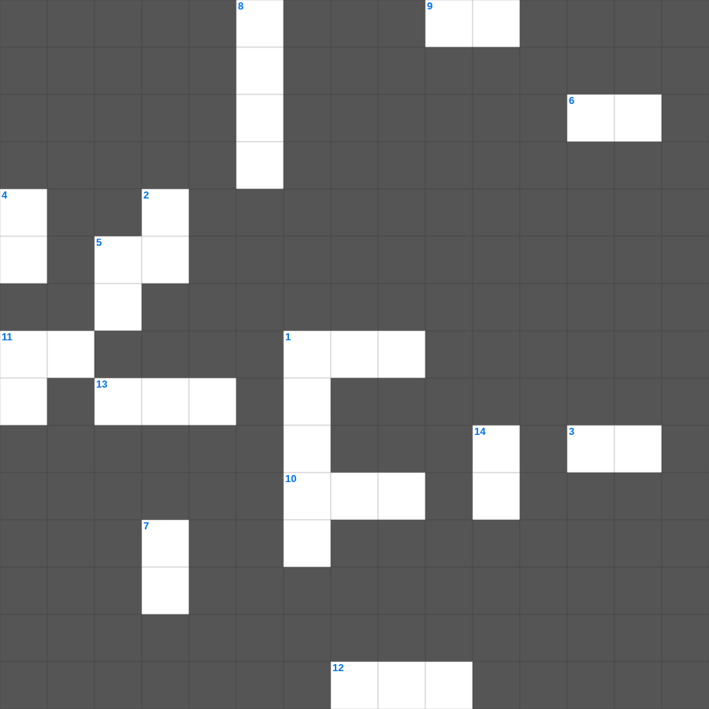

에스더: 보충 단어
📌 서비스 정의
십자가로세로는 교회 주보와 주일학교에서 사용할 수 있는 성경 기반 가로세로 퍼즐 서비스입니다. 성경 인물, 사건, 핵심 구절을 바탕으로 제작되었습니다. 온라인 풀이 및 인쇄 기능을 제공합니다.
오늘은 에스더의 주요 내용을 담은 에스더 성경공부 자료를 준비했습니다. 총 20개의 힌트가 있으며, 주일학교 교재나 성경공부 자료로 활용하기 좋습니다. 무료로 즐기는 에스더 가로세로 퍼즐을 지금 바로 풀어보세요!

📝 가로 힌트
1. 부림절에 유다인이 잔치하는 달
3. 부림절을 지키게 된 유다인
5. 에스더가 왕에게 청한 두 번째 잔치
6. 유다인의 구원
9. 하만이 세운 나무의 높이 단위
10. 바사의 왕후가 된 유다 여인
10. 와스디가 버림받은 후 선택된 여인
11. 에스더가 입은 왕후의 예복
12. 바사 왕 아하수에로가 버린 왕후
13. 유다인이 구원받은 것을 기념하는 절기
📝 세로 힌트
1. 에스더의 남편 바사 왕
2. 에스더가 베푼 첫 잔치
4. 왕이 하만에게 내린 최후의 벌
5. 아하수에로 왕이 베푼 잔치
5. 에스더가 왕에게 청한 것
7. 에스더가 죽음을 각오하고 간 곳
8. 에스더를 키워준 사촌 오빠
11. 에스더가 왕의 이름으로 쓴 조서
11. 유다인이 원수를 대적하게 된 조서
14. 모르드개가 에스더를 양육
🧑🏫 교회 교육 자료 활용
이 퍼즐은 주일학교 교재 추천 자료로 활용할 수 있고, 주일학교 주보에 넣기 좋은 분량으로 구성되어 있습니다. 수업용 주일학교 교안에 활동지로 붙이거나, 예배 후 복습용 주일학교 공과교재로 바로 사용할 수 있습니다.
🏷️ 키워드
에스더 성경공부 자료, 에스더, 십자가로세로, 성경퀴즈, 말씀퀴즈, 가로세로퍼즐, 주일학교 교재 추천, 주일학교 주보, 주일학교 교안, 주일학교 공과교재